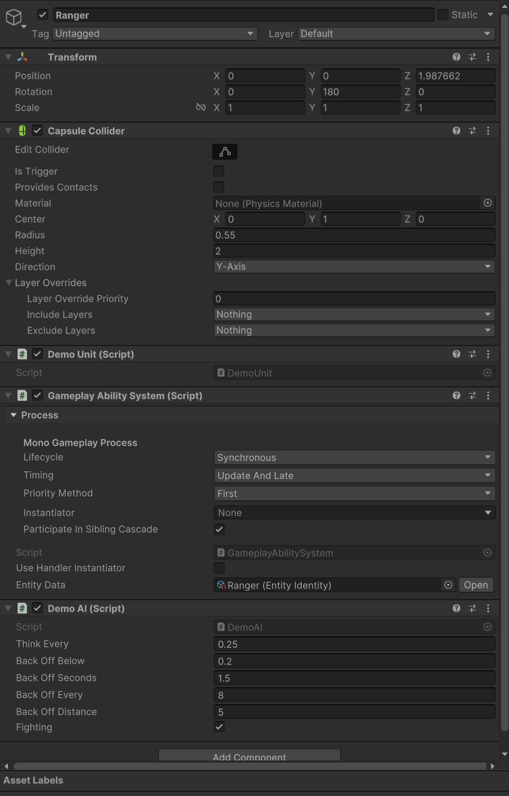
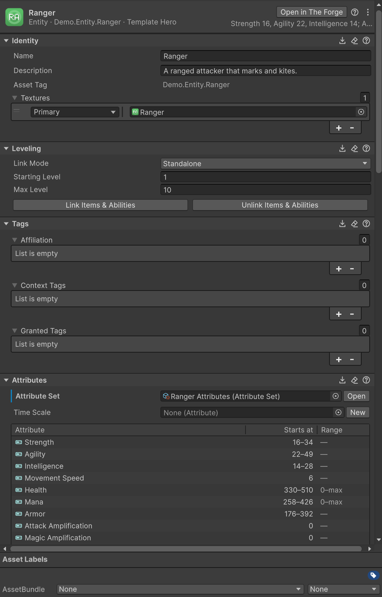

Entities
An Entity asset (EntityIdentity) describes one kind of entity, such as the hero or a goblin. An entity is anything
that runs a gameplay ability system (GAS).
classDiagram
class ITarget:::ext {
<<interface>>
anything an effect lands on
IAffiliated, ITagHandler, IHasReadableDefinition
}
class IEffectOrigin:::ext {
<<interface>>
+GetSource() ISource
+GetLevel() IntValuePairClamped
+GetAssetTag() Tag
+GetContextTags()
+IsActive() bool
}
class IGameplayProcessHandler:::ext {
<<interface>>
owns processes
}
class ISource:::ext {
<<interface>>
+GetTagCache() TagCache
+GetActionQueue() ActionQueue
+GetFrameSummary() FrameSummary
+GetLongestDurationFor(Tag)
+SetLevel(Tag, IntValuePair)
+ModifyLevel(Tag, IntValuePair)
}
class IGameplayAbilitySystem:::ext {
<<interface>>
also ILocalDataUser, IAnalysisUser, IProxyTaskBehaviourCaller
+GetAbilitySystem() AbilitySystemComponent
+GetEffectSystem() EffectSystemComponent
+GenerateEffectSpec(IEffectOrigin, GameplayEffect) GameplayEffectSpec
+ApplyGameplayEffect(GameplayEffectSpec) bool
+TryGetAttributeValue(IAttribute, out AttributeValue) bool
+GetTagWeight(Tag) int
+SendGameplayEvent(Tag, ProcessDataPacket) int
+SetAffiliation(List~Tag~)
+MarkDead()
+Revive(at)
}
class GameplayAbilitySystem:::rt {
<<MonoBehaviour>>
+EntityData : EntityIdentity
+Callbacks : GameplayAbilitySystemCallbacks
+static AddToGameObject(GameObject, EntityIdentity)
+ApplyGameplayEffect(IEffectOrigin, GameplayEffect)
+QueueAction(IRootAction)
builds its GASCore at registration
}
class RuntimeGameplayAbilitySystem:::rt {
+ctor(EntityIdentity, AbstractTargetingPacket)
+EntityData : RuntimeEntityIdentity
+EndOfFrame()
HandleDestruction()
builds its GASCore in its constructor
}
class GameRoot:::rt {
+static Instance : GameRoot
+Project : ForgeProject
the root entity and default handler
}
class GASCore:::rt {
<<internal sealed>>
+AttributeSystem : AttributeSystemComponent
+AbilitySystem : AbilitySystemComponent
+ItemSystem : ItemSystemComponent
+EffectSystem : EffectSystemComponent
+LevelSystem : SystemLevelsComponent
+TagCache : TagCache
+Initialize(RuntimeEntityIdentity, registered)
+Tick()
+EndOfFrame() bool
+CompileGrantedTags()
+static Of(IGameplayAbilitySystem) GASCore
}
class RuntimeEntityIdentity:::rt {
the only identity GASCore reads
+InitWorkers(ISource)
+RemoveWorkers(ISource)
+GetGrantedTags()
}
class EntityIdentity:::asset {
<<ScriptableObject>>
+AssetTag, Affiliation, GrantedTags
+AttributeSet : AttributeSet
+StartingAbilities : List~Ability~
+StartingItems
+WorkerGroup : StandardWorkerGroup
+Components : List~AbstractEntityComponent~
+Find() T, its first component that is a T
+CrowdControl : CrowdControlRules
+Death : EntityDeath
}
class GameplayAbilitySystemCallbacks:::rt {
+OnSystemInitialized
+OnFrameComplete(FrameSummarySnapshot)
+OnEffectApplied(GameplayEffectSpec)
+OnEffectRemoved(GameplayEffectSpec)
+OnImpactDealt, OnImpactReceived
+OnReductionReceived, OnIncreaseReceived
+OnEntityDied, OnEntityRevived
}
ITarget <|-- ISource
IEffectOrigin <|-- ISource
IGameplayProcessHandler <|-- ISource
ISource <|-- IGameplayAbilitySystem
IGameplayAbilitySystem <|.. GameplayAbilitySystem
IGameplayAbilitySystem <|.. RuntimeGameplayAbilitySystem
GameplayAbilitySystem <|-- GameRoot
GameplayAbilitySystem "1" *-- "1" GASCore : forwards to
RuntimeGameplayAbilitySystem "1" *-- "1" GASCore : forwards to
GameplayAbilitySystem *-- GameplayAbilitySystemCallbacks
RuntimeGameplayAbilitySystem *-- GameplayAbilitySystemCallbacks
GASCore --> RuntimeEntityIdentity : Identity
EntityIdentity <.. RuntimeEntityIdentity : wraps a shallow copy
GameplayAbilitySystem --> EntityIdentity : EntityData
classDef rt fill:#FFE86D,stroke:#CBB333,color:#574900
classDef ext fill:#A0C4FB,stroke:#6A8BBF,color:#14315E
classDef asset fill:#B8ACFB,stroke:#7D6DD4,color:#231266
IGameplayAbilitySystem is the entity contract. Both hubs implement it and forward to one internal GASCore, which reads only a RuntimeEntityIdentity.

The Ranger's hub, its GameplayAbilitySystem, in the Inspector in play.

The Ranger's inspector.
The asset is the entity's starting setup: its attributes, abilities, items, tags, level and workers. Many entities can share one asset.
At runtime, a GAS hub reads the asset when it initializes. The hub is either the GameplayAbilitySystem component on a
GameObject, or a RuntimeGameplayAbilitySystem made from code. As it initializes, the hub:
- Subscribes the entity's workers.
- Registers its level.
- Gives its Starting Abilities.
- Builds its attributes from its Attribute Set.
- Gives its Starting Items.
- Applies its tags.
Tags are names, such as State.Stunned, that an entity carries and that requirements check. Each asset stores a tag
made from its Name: Hero gives Entity.Hero. The entity carries this tag and keeps its own level under it.
Each section below matches the inspector section of the same name. A collapsed section shows one line about what it holds, such as the level range or how many starting items the entity equips.
The inspector's header shows the entity's one-line summary, as The Forge's Summary column does. The line gives the first three attributes of the entity's attribute set as it starts, at its starting level, then its starting abilities: "Health 500, Mana 300, Armor 5; Fireball, Blink".
In this guide
- Identity: The Identity section names the entity, shows its asset tag and holds its icons.
- Leveling: The Leveling section sets the entity's level range.
- Tags: The Tags section sets the entity's sides and the tags it carries.
- Attributes: The Attributes section names the entity's attribute set and the attribute its time runs at.
- Abilities: The Abilities section sets the abilities the entity starts with, how many it can hold, and what its abilities do while another is busy.
- Items: The Items section sets the items the entity starts with and the limits on its inventory.
- Components: An entity's components are features it carries, each a class with hooks into the entity's life.
- Workers: Workers are reusable behaviours, picked from a list, that react to what happens to an entity.
- Death: The Death section sets what the entity's death does.
- Combat Log: Each entity keeps a combat log of what happens to it.
- Effect Journal: An
EffectJournalkeeps the life of each effect on the entities it listens to. - Local Data: Local Data is a list of named values stored on the asset.
- Used By: The Used By section lists the PlayForge assets that refer to this entity, each with its type icon, such as the abilities and items linked to it.
- Built-in kinds: The kinds PlayForge ships for this guide's pickers, each with its menu and what it does, as its picker says.
In the API
The types of this guide's area: AbstractEntityService, AbstractRespawnPlace, AuraAbilityComponent, AuraEffectComponent, AuraEntityComponent, AuraEntry, AuraItemComponent, AuraSet, BountyEntityComponent, ChangeStep, CombatLog, CombatLogEntry, CombatLogSettings, EAffiliationFilter, EAreaCentre, EChangeStepKind, ECombatLogKind, ECombatLogRecords, EDeathPolicy, EEffectJournalKind, EEffectRefusal, EEffectWorkerHook, EffectArea, EffectJournal, EffectJournalAction, EffectJournalEntry, EffectSystemComponent, EffectWorkerRun, EJournalActionState, EntityClock, EntityDeath, EntityIdentity, ESideSource, EWorkerSide, ForgeAuras, ForgeCombatLog, ForgeEntities, ForgeEvents, ForgeResolveOrder, ForgeWorkerNames, GameplayAbilitySystem, GameplayAbilitySystemCallbacks, GameplayAbilitySystemCallbacks.ActionFailedDelegate, GameplayAbilitySystemCallbacks.ActionQueuedDelegate, GameplayAbilitySystemCallbacks.ChangeStepDelegate, GameplayAbilitySystemCallbacks.DeathDelegate, GameplayAbilitySystemCallbacks.EffectDelegate, GameplayAbilitySystemCallbacks.EffectRefusedDelegate, GameplayAbilitySystemCallbacks.EffectTickDelegate, GameplayAbilitySystemCallbacks.EffectWorkerDelegate, GameplayAbilitySystemCallbacks.FrameCompleteDelegate, GameplayAbilitySystemCallbacks.ImpactDelegate, GameplayAbilitySystemCallbacks.ImpactWorkerDelegate, GameplayAbilitySystemCallbacks.SystemDelegate, GameplayAbilitySystemCallbacks.TagWorkerDelegate, HomeRespawnPlace, IAuraComponent, IForgeTurner, IGameplayAbilitySystem, ImpactWorkerRun, ISource, ITarget, LevelCallbackStatus, LevelSystemCallbacks, LevelSystemCallbacks.LevelSystemCallbackDelegate, PointRespawnPlace, ResolveOrderEntry, RespawnEntityComponent, RespawnTimer, RuntimeEntityIdentity, RuntimeGameplayAbilitySystem, SideSet, StartingItemContainer, SystemComponentData, SystemLevelsComponent, WhereItDiedRespawnPlace.